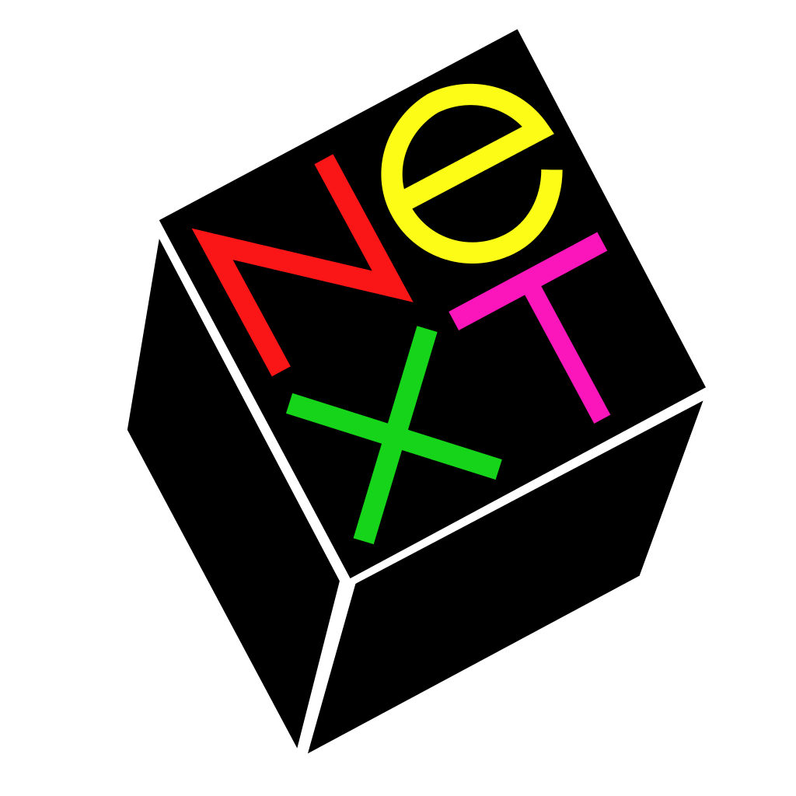

Steve Jobs en Steve Wozniak waren twee vrienden, ze hadden elkaar leren kennen bij Hewlett-Packard (HP).
Wozniak was al enkele jaren bezig met het ontwerpen van een personal computer waarbij Steve Jobs hem hielp.
In 1975 bouwden ze een prototype van een voorloper van de Apple I. Ze zijn met dit prototype langs HP en Atari gegaan.
Maar die waren niet geïnteresseerd, ze besloten om het zelf te gaan verkopen. In 1976 ontstond het bedrijfje Apple.
Het logo was een appel met de kleuren van de regenboog en een hap eruit. Het bedrijfpand was vooralsnog
de garage van het ouderlijk huis van Jobs.
APPLE I
De zelfbouwcomputer Apple I bestond uit een printplaat vol met handgesoleerde onderdelen. De koper moest
zelf zorgen voor de voeding, keyboard, een cassettespeler en een tv. De verkoopprijs was 666,66 Dollar,
inclusief een cassette met progammeertaal voor Apple BASIC. Voor de Apple I was weinig belangstelling, het
was een computer waarvan al veel bestonden. Vaak moesten de gegevens nog met behulp van hexidecimale
machinetaal ingevoerd worden.
APPLE II
Al leverde de Apple I ruim driekwart miljoen dollar op, als bedrijf werd Apple nog niet echt serieus genomen.
Tot ze in 1977 de Apple II introduceerde. Het was de eerste pc die in een plastic kast zat en kleuren kon weergeven.
Wanneer wat later een losse floppy drive beschikbaar kwam, veroverde de Apple II ook het buitenland. Voor mensen die
niet in staat waren hun eigen progamma's te schrijven, kwam er steeds meer kant en klare software op de markt,
waaronder het databaseprogamma.
APPLE LISA
Er werden nieuwe investeerders en managers aangetrokken en Steve Jobs kreeg de leiding. Hiermee en met de
oprichting van Apple Computer Inc. veranderde Apple van een club enthousiaste hobbyisten in een echt bedrijf
en multinational. In de eind jaren 70 haalde Apple ambitieuze Xeroc PARC werknemers binnen, zij adviseerden
om eens een bezoek te brengen aan het PARC centrum. Dit bezoek bracht Apple veel inspiratie op en Steve Jobs
realiseerde al snel de potentie van de Graphical User Interface (GUI) concepten ontwikkeld door de Xerox ingenieurs.
De Apple Lisa werd een tijdje later ontwikkeld, het was een peperdure pc met een muis, een floppy drive en een GUI
met iconen en pull-down menu's.
MACINTOSH
Intussen stond de concurrentie niet stil. In 1981 was ook het jaar waarin IBM haar eerste personal computer op
de markt bracht. Apple moest met een revolutionair product komen om met IBM te concurreren. In 1984 introduceerde
Apple de Macintosh, een alles-in-één-computer waarmee je kon tekenen en veel meer. De Macintosh was één van de populairste computers van dat jaar.
MAC II
De introductie van de Mac II zorgde terug voor een groot succes. Dit kwam door de Apple Personal Laserwriter
en progamma's als Aldus Pagemaker waarover de nieuwe Macintosh beschikte. DeskTop Publishing deed zijn intrede en de
Mac veroverde ook de grafische sector. Apple bleef hardware en besturingssytemen samen verkopen, dit was niet slim omdat de
wereldmarkt werd veroverd door zogenaamde klonen. Iedereen kon zijn eigen computer samenstellen en een los te
kopen besturingssysteem kiezen. Als reactie hierop besloot Apple het Mac OS in licentie uit te geven. De stap
van Apple kwam te laat want Windows had de wereld veroverd en niet de Mac OS.
POWERBOOK
Apple wou terug slaan en bracht in 1991 de eerste laptop, de PowerBook en even later kwam ook de Newton op de markt,
de eerste PDA met handschriftherkenning. Apple sloot ook een deal met IBM en Motorola, dit resulteerde in de
introductie van de PowerMac, gebaseerd op de nieuwe snelle PowerPC chip van IBM en Motorola. In 1993 stopte de verkoop
van Apple II, na 17 jaar en 5 miljoen verkochte exemplaren.
NEXT

Het marktaandeel bleef dalen, dit kwam niet alleen door de concurrentie maar in 1995 had Apple I een miljard
dollar aan orders binnengehaald, maar kon vervolgens niet leveren. Dit had een groot gevolg want de klanten
liepen weg, opstapeling van verliezen en financiële analisten voorspelden een faillissement. In 1996 nam Apple
het bedrijf NeXt over, dit bedrijf was opgericht door Steve Jobs! Jobs keerde als adviseur terug en even
later als interim CEO. Zo kwam er terug vaart in het bedrijf. Apple wilde de technologie van NeXt gebruiken
in een volgende Mac OS.
IMAC
Steve Jobs wou een einde maken aan de slepende juridische strijd met Microsoft over de rechten van Windows.
Ook trok Jobs een streep door de klonen-licenties en kondigde aan Macs rechtstreeks aan de consument te gaan
verkopen, door middel van de Apple Store. In 1998 introduceerde de iMac, een betaalbaar, alles-in-één model
gericht op het internet, zo werd de comeback van Apple compleet. De iMac werd een van de best verkopende
computers. Jobs ging door met de 'i' line in een portable versie "iBook" en diverse progamma's als iMovie,
iTunes en iTools.
IPOD
In 2001 introduceerde Apple de eerste iPod, dit was een draagbare mp3-speler met een harde schijf van 5 GB.
Het bestond uit vier bedieningstoetsen: Menu, Play/Pause, Back en Forward geplaatst rond een scrollwiel.
In dat zelfde jaar kwam ook de Mac OS X, het is gebaseerd op NeXTSTEP, het besturingssysteem van de NeXT
computer, maar met een volledige vernieuwde grafische gebruikinterface die door Apple zelf is ontwikkeld en
Aqua heette.
IPHONE
In 2007 introduceerde Apple de eerste iPhone, de verkoop startte in de Verenigde Staten waar duizenden mensen
in een rij stonden voor de Apple Stores om hun eerste iPhone te bemachtigen. De iPhone draaide op het revolultionare
iPone OS wat later IOS genoemd zou worden. De iPhone werd een gigantisch succes.
IPAD
In 2010 introduceerde Apple de eerste iPad, een tablet waarmee je kon boeken lezen, luisteren naar muziek,
films kijken, games spelen, e-mailen en surfen op het internet. Tevens kan het apparaat vrijwel alle bestaande
progamma's (voor de iPhone en iPod touch) uit de App Store gebruiken en zijn er iPad-specifieke progamma's
verkrijgbaar.
In 2011 kwam Steve Jobs te overlijden aan alvleesklierkanker. Tim Cook werd de opvolger van Steve Jobs. Steve Jobs heeft twee van de meest
succesvolle bedrijven opgericht van de moderne tijd, Apple en Pixar. Daarom zullen we nooit vergeten wat hij voor ons gedaan heeft.
 Al leverde de Apple I ruim driekwart miljoen dollar op, als bedrijf werd Apple nog niet echt serieus genomen.
Tot ze in 1977 de Apple II introduceerde. Het was de eerste pc die in een plastic kast zat en kleuren kon weergeven.
Wanneer wat later een losse floppy drive beschikbaar kwam, veroverde de Apple II ook het buitenland. Voor mensen die
niet in staat waren hun eigen progamma's te schrijven, kwam er steeds meer kant en klare software op de markt,
waaronder het databaseprogamma.
Al leverde de Apple I ruim driekwart miljoen dollar op, als bedrijf werd Apple nog niet echt serieus genomen.
Tot ze in 1977 de Apple II introduceerde. Het was de eerste pc die in een plastic kast zat en kleuren kon weergeven.
Wanneer wat later een losse floppy drive beschikbaar kwam, veroverde de Apple II ook het buitenland. Voor mensen die
niet in staat waren hun eigen progamma's te schrijven, kwam er steeds meer kant en klare software op de markt,
waaronder het databaseprogamma.
 Intussen stond de concurrentie niet stil. In 1981 was ook het jaar waarin IBM haar eerste personal computer op
de markt bracht. Apple moest met een revolutionair product komen om met IBM te concurreren. In 1984 introduceerde
Apple de Macintosh, een alles-in-één-computer waarmee je kon tekenen en veel meer. De Macintosh was één van de populairste computers van dat jaar.
Intussen stond de concurrentie niet stil. In 1981 was ook het jaar waarin IBM haar eerste personal computer op
de markt bracht. Apple moest met een revolutionair product komen om met IBM te concurreren. In 1984 introduceerde
Apple de Macintosh, een alles-in-één-computer waarmee je kon tekenen en veel meer. De Macintosh was één van de populairste computers van dat jaar.